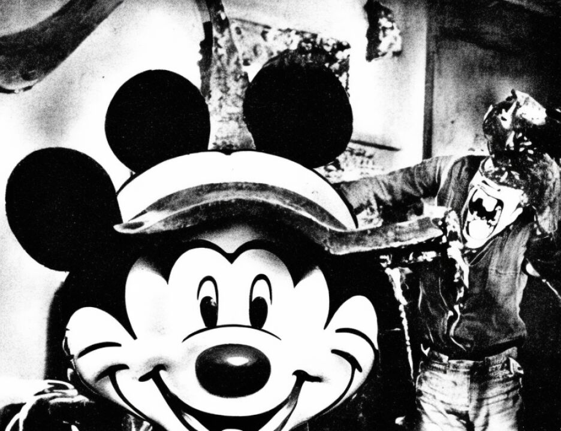

14 a bombing, he is worth maybe more. Maybe he
15 assaults an officer and tries to take a hostage
16 and still serves a life sentence, maybe he is
17 worth more.
18 I submit punishing someone with life
19 imprisonment or death, no one is going to give
20 anyone credit. No terrorist attack is going to
21 be stopped because someone gets a life sentence
22 versus death. Usama Bin Laden hates us. There
23 is no way around it. Everyone in his group
24 hates us. They hate everything we do,
25 everything we try to do, everything we don't
REPORTERS CENTRAL
(212) 594-3582
8638
1 1721BIN2
SUMMATION - Mr. Fitzgerald
2 do. This trial, in their eyes, is a fraud.
3 Everything we do is a fraud. We are evil. Do
4 you really think this is an operation that is
5 going to be wiped off the books if Khalfan
6 Mohamed gets a life sentence? I submit to you
7 not.
8 Look at this case. The claims of
9 responsibility for the bombing he did in
10 Tanzania is in the name of Salmon al Odeh and
11 Zafra Al-'Owhali. Not related to Al-'Owhali,
12 not related to Odeh, two scholars in a Saudi
13 prison. Look at the stipulation. Sheik Omar
14 was convicted for trying to murder President
15 Mubarak of Egypt because of the arrest of
16 Mahmud Abouhalima. Bin Laden is screaming
17 about Al-'Owhali because of his arrest.
18 I submit to you, look at the note,
19 look at the hostage-taking note left on
20 November 1, 2000. "Please release," fill in
21 the blank, "from custody." If you are in jail,
22 they want you out. And they are going to bomb,
23 they are going to do what they want to do to
24 get people out of jail. If they decide to do a
25 bombing and name it after people, they will
REPORTERS CENTRAL
(212) 594-3582
8639
1 1721BIN2
SUMMATION - Mr. Fitzgerald
2 fill in the blank of whomever they want.
3 But don't let Khalfan Mohamed try to
4 get, a terrorist, gee, give me life, maybe it
5 will be the last bombing. It ain't happening.
6 His name will be on the list of 50 others names
7 when he is in jail or whether he is executed as
8 a reason to go forward.
9 K. Khalfan Mohamed should not have
10 been released by South African authorities.
11 Mr. Ruhnke opened on the fact that this was
12 almost like being struck by lightening. And
13 again, it's sort of passive stuff. It's like
14 the weather. Khalfan Mohamed blowing in the
15 wind, struck by lightening to face the death
16 penalty.
17 Let's step back and think about it.
18 It is not lightening. Okay, the law of our
19 country, the law of our nation is if you commit
20 murder, certain murders, you face the death
21 penalty. Khalfan Mohamed committed murder 11
22 times over. If he faces the death penalty,
23 it's not because he got struck by lightening,
24 but because he killed. He made a choice and he
25 killed and he'll get a punishment provided by
REPORTERS CENTRAL
(212) 594-3582
8640
1 1721BIN2
SUMMATION - Mr. Fitzgerald
2 the law.
3 He killed in Tanzania, where there is
4 a death penalty. He killed Tanzanians. He
5 killed trying to kill Americans, and the death
6 penalty is here. He killed Muslims, as the
7 imam told you in that video. Islam makes no
8 apologies for the death penalty. He killed in
9 a country with a death penalty, against a
10 country with a death penalty, and people of a
11 religion who have the death penalty.
12 And then he went to South Africa,
13 went to South Africa, which happened not to
14 have the death penalty. He went to South
2